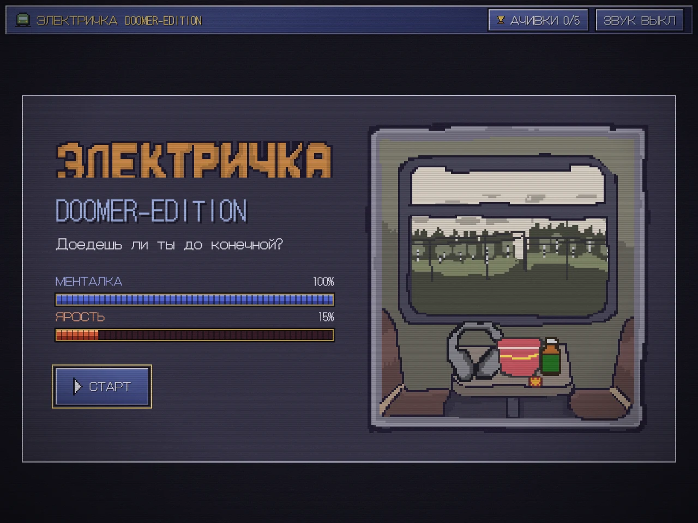
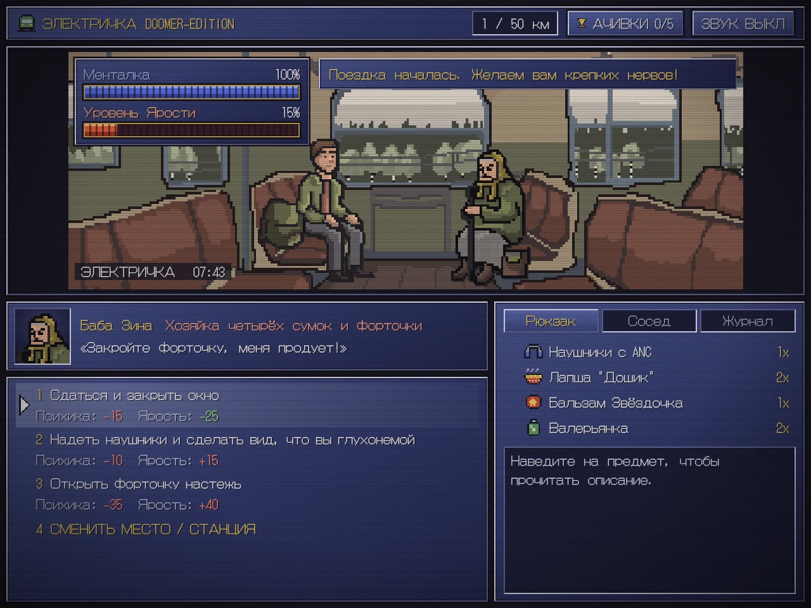
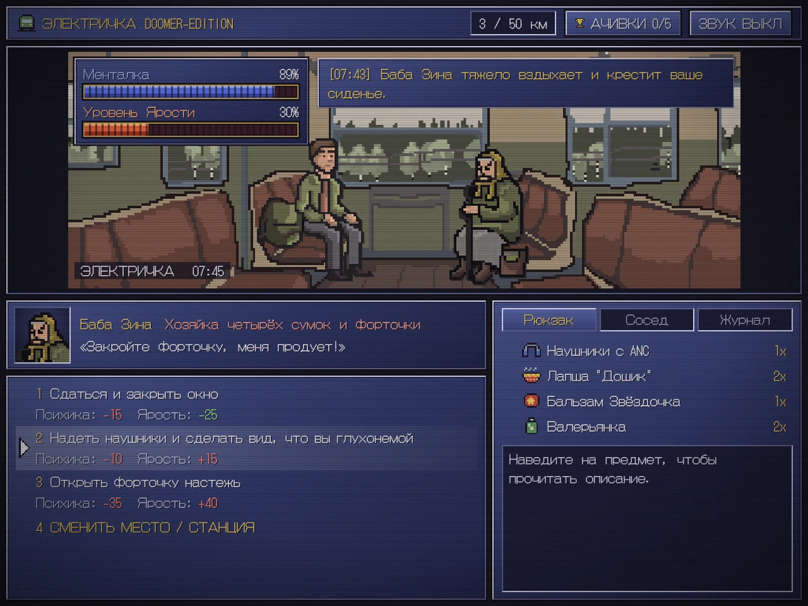
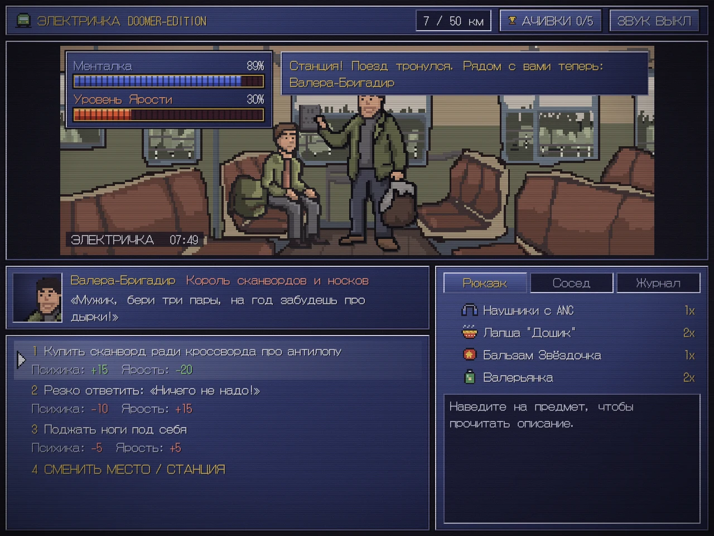
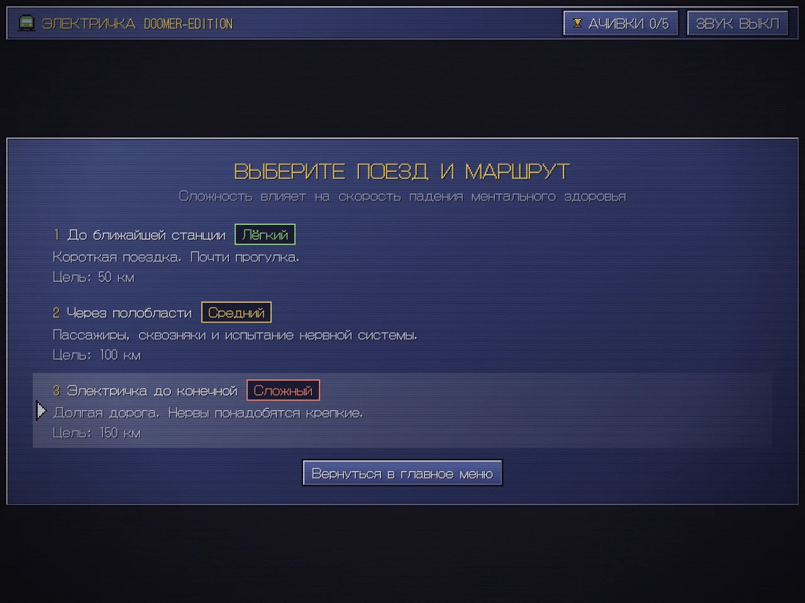
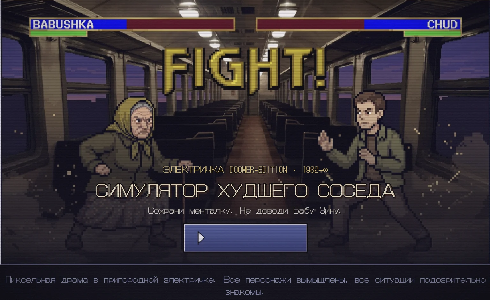
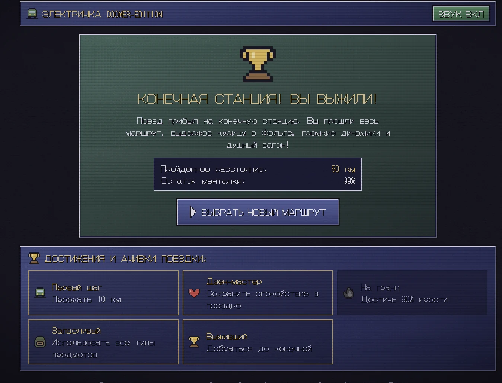

Симулятор худшего соседа
Пиксельная игра про электричку — в духе нулевых на PlayStation
- Роль
- Идея, сценарий и тексты, пиксель-арт, моушн в After Effects
- Инструменты
- Piskel, After Effects, Claude (сборка на React)
01 Контекст и цели
Личный игровой проект, для которого я сама придумала идею, сценарий и весь арт. Это пиксельный симулятор поездки в пригородной электричке: все персонажи здесь вымышленные, но ситуации до боли знакомые.
02 Задача
Превратить обычную поездку в электричке в игру, которая смешит с первого экрана, а любая бытовая мелочь вроде открытой форточки или запаха курицы работает как полноценная игровая механика.
03 Концепция и визуальный стиль
За основу визуала я взяла ретро-RPG с первой PlayStation с их синими окнами диалогов, курсорами в меню, шкалами характеристик и ачивками. В первой версии титульный экран был сделан в духе файтингов («FIGHT!»), но игра про выбор реплик, а не про драку, поэтому во второй версии я переделала обложку под RPG.
Весь юмор строится на доведённых до абсурда бытовых сценках постсоветской электрички. Баба Зина (владелица четырёх сумок и форточки) требует закрыть окно, сосед перегораживает проход огромным баулом, из динамиков орёт радио, а в вагоне нечем дышать. Игрок сам решает, как на всё это реагировать, и расплачивается за выбор собственными нервами.
На фоне моих ярких и кислотных проектов эта игра намеренно сделана в мрачной, выцветшей палитре — хотелось передать ту самую тоску утренней электрички в 7:43, где за окном мелькает серый забор, а внутри душно и тесно. Грубоватый пиксель-арт и синие окна в духе старых консольных квестов здесь работают на легкий хтонический вайб, интерфейс при этом нарочито олдскульный.
04 Ключевые UX/UI-решения
-
Поезд не ждёт
Станции приходят сами: каждые 15 км подсаживается новый сосед, а раз в несколько секунд он выкидывает очередную выходку. На каждую можно ответить только раз, а если промолчать — платишь нервами. Сбежать тоже можно, но пересесть стоит −10 менталки.
-
Выбор с ценой
У каждого ответа сразу видны последствия вроде «Психика −15, Ярость −25». Приходится выбирать, чем пожертвовать, а не угадывать «правильную» кнопку.
-
Шкалы вместо текста
Менталка и ярость, а рядом уровень раздражения, шума и запаха. По шкалам за секунду понятно, как дела у героя.
-
Рюкзак выживания
В инвентаре лежат наушники с шумодавом, «Дошик», бальзам «Звёздочка» и валерьянка. У каждой вещи свой эффект, а в логе сразу видно, что изменилось.
-
Маршрут и сложность
Можно выбрать одну из трёх дистанций: до ближайшей станции, через пол-области или до конечной. Чем дольше ехать, тем быстрее падает менталка.
-
Два состояния персонажа
У каждого попутчика есть спокойный и злой портрет, так что недовольство Бабы Зины считывается ещё до первой реплики.
-
Ачивки поездки
Награды «Первый шаг», «Дзен-мастер», «На грани», «Запасливый» и «Выживший» мотивируют проехать маршрут ещё раз и попробовать другую тактику.
05 Версия 2: честный пиксель-арт
В первой версии персонажи и вагон были сгенерированы нейросетью: картинки получились мыльными, стиль распадался, а у каждого героя был свой размер пикселя. Во второй версии я вручную отрисовала в Piskel всех восьмерых персонажей (у каждого спокойное и злое лицо), сам вагон, пейзаж за окном и новую обложку.
Главным правилом стал единый размер пикселя для всей сцены и масштабирование только целым числом без сглаживания, чтобы вагон и люди ощущались частью одного мира. Обложка при этом ожила: за окном проносится лес, а вагон слегка потряхивает на стыках.










06 Версия 1: экраны с нейросетевой графикой





07 Реализация
- Сцену поездки собрала по слоям и отрендерила в After Effects: вагон остаётся неподвижным, а лес за окнами плавно прокручивается, чтобы поезд ощущался в движении без тяжёлой анимации всего кадра.
- Рабочую сборку на React и Vite делала в связке с Claude — сама проектировала игровую логику, писала подробные промпты для механик и вручную допиливала стили, сетку и мелкие детали интерфейса.
- В HUD добавила переключатель звука, счётчик пройденных километров и таймер, чтобы поездка ощущалась как настоящий консольный квест.